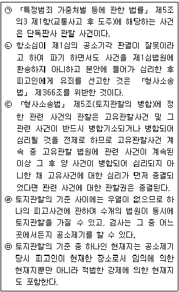
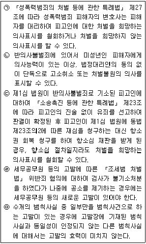
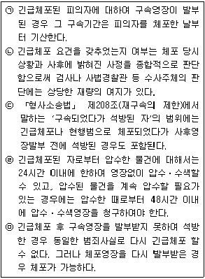
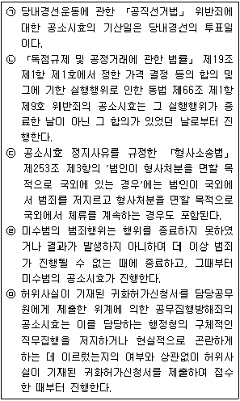

경찰공무원(순경)-형사소송법 (2020-09-19 기출문제)
1. 「형사소송법」 의 적용범위에 대한 설명으로 가장 적절하지 않은 것은? (다툼이 있는 경우 판례에 의함)
- 국회의원의 면책특권에 속하는 행위에 대하여 공소를 제기한 경우, 법원은 공소기각판결을 선고하여야 한다.
- 「형사소송법」 부칙(법률 제8496호, 2007. 6. 1.) 제2조는 형사절차가 개시된 후 종결되기 전에 「형사소송법」 이 개정된 경우 신법과 구법 중 어느 법을 적용할 것인지에 관한 입법례 중 이른바 혼합주의를 채택하여 구법 당시 진행된 소송행위의 효력은 그대로 인정하되 신법 시행 후의 소송절차에 대하여는 신법을 적용한다는 취지에서 규정된 것이다.
- 일반 국민이 범한 특정 군사범죄와 그 밖의 일반 범죄가 「형법」 제37조 전단의 경합범 관계에 있다고 보아 하나의 사건으로 기소된 경우, 특정 군사범죄에 대하여 전속적인 재판권을 가지는 군사법원은 그 밖의 일반 범죄에 대하여도 재판권을 행사할 수 있다.
- 「근로기준법」 개정(법률 제7465호, 20⑤. 3. 31.)으로 종전에는 피해자의 의사에 상관없이 처벌할 수 있었던 동법 제112조 위반죄가 반의사불벌죄로 개정된 경우에 비록 부칙에 이에 대한 경과규정이 없을지라도 개정법률이 피고인에게 더 유리할 수 있기에 「형법」 제1조 제2항에 의하여 개정법률이 적용되어야 한다.
(정답률: 72%)

2. 신속한 재판의 원칙에 대한 설명으로 가장 적절하지 않은 것은? (다툼이 있는 경우 판례에 의함)
- 「형사소송법」 의 규정에 따르면 검사는 수사의 신속한 종결을 위해 피의자가 체포 또는 구속된 날부터 30일 이내에 공소장을 제출하여야 한다.
- 형사피고인은 헌법에 의해 신속한 재판을 받을 권리를 보장받고 있다.
- 구속사건에 대해서는 법원이 구속기간 내에 재판을 하면 되는 것이고 구속 만기 25일을 앞두고 제1회 공판이 있었다 하여 헌법이 정한 신속한 재판을 받을 권리를 침해하였다고 할 수 없다.
- 신속한 재판은 피고인의 이익뿐만 아니라 재판에 대한 국민의 신뢰와 형벌 목적의 달성과 같은 공공의 이익에도 그 근거를 두고 있다.
(정답률: 67%)
3. 다음 법원의 관할에 대한 설명 중 적절한 것만을 모두 고른 것은? (다툼이 있는 경우 판례에 의함)

- ㉠㉡㉢㉣
- ㉡㉢㉤
- ㉢㉣㉤
- ㉠㉡㉣㉤
(정답률: 48%)
4. 변호인에 대한 설명으로 가장 적절한 것은? (다툼이 있는 경우 판례에 의함)
- 피고인들의 제1심 변호인에게 「변호사법」 제31조 제1호의 수임제한 규정을 위반한 위법이 있다면 피고인들 스스로 그 변호인을 선임한 경우라도 소송절차가 무효가 된다.
- 재항고인이 제1심에서만 변호인선임신고서를 제출하고 항고심과 재항고심에서는 별도의 변호인선임신고서를 제출하지 않은 상태에서 재항고인의 제1심 변호인이 법정기간 내에 자신의 명의로 재항고장을 제출하였다면 재항고는 효력이 있다.
- 필요적 변호사건에서 항소법원이 국선변호인을 선정하고 피고인과 그 변호인에게 소송기록접수통지를 한 다음 피고인이 사선변호인을 선임함에 따라 항소법원이 국선변호인의 선정을 취소한 경우, 항소이유서 제출기간은 국선변호인의 선정 취소를 한 날부터 계산하여야 한다.
- 피의자신문에 참여한 변호인은 신문 중이라도 부당한 신문방법에 대하여 이의를 제기할 수 있고, 검사 또는 사법경찰관의 부당한 신문방법에 대한 이의제기는 고성, 폭언 등 그 방식이 부적절하거나 또는 합리적 근거 없이 반복적으로 이루어지는 등의 특별한 사정이 없는 한, 원칙적으로 변호인에게 인정된 권리의 행사에 해당하며, 신문을 방해하는 행위로는 볼 수 없다.
(정답률: 50%)
5. 변사자에 대한 설명으로 가장 적절한 것은? (다툼이 있는 경우 판례에 의함)
- 변사자란 부자연한 사망으로서 그 사인이 분명하지 않은 자뿐만 아니라 범죄로 사망한 것이 명백한 자도 포함된다.
- 변사자는 수사의 단서로서 발견 즉시 수사가 개시된다.
- 「검사의 사법경찰관리에 대한 수사지휘 및 사법경찰관리의 수사준칙에 관한 규정」 제51조 제1항에 의하면 사법경찰관리는 변사자 또는 변사의 의심이 있는 사체가 있으면 관할 지방검찰청 또는 지청의 검사에게 보고하고 지휘를 받아야 한다. 단, 긴급을 요하는 경우 그러하지 아니하다.
- 「형사소송법」 제222조 제1항의 검시로 범죄의 혐의를 인정하고 긴급을 요할 때에는 영장없이 검증할 수 있다.
(정답률: 58%)
6. 수사에 대한 설명으로 가장 적절하지 않은 것은? (다툼이 있는 경우 판례에 의함)
- 구 「조세범 처벌법」(2010. 1. 1. 법률 제9919호로 개정되기 전의 것) 제6조의 세무종사 공무원의 고발에 앞서 수사를 하고 피고인에 대한 구속영장을 발부받은 후 검찰의 요청에 따라 세무서장이 공소 제기 전에 고발을 하였다면 「조세범 처벌법」 위반사건 피고인에 대한 공소제기의 절차가 무효라고 할 수는 없다.
- 검사가 사법경찰관리에게 사건에 대한 구체적 지휘를 할 때에는 그 지휘 내용이 명확한 경우뿐만 아니라 보완하는 경우에도 「형사사법절차 전자화 촉진법」에 따른 형사사법정보시스템을 이용하여 지휘하여야 한다.
- 사법경찰관리는 수사과정에서 수사와 관련하여 작성하거나 취득한 서류 또는 물건에 대한 목록을 빠짐없이 작성하여야 한다.
- 구속영장 발부에 의하여 적법하게 구금된 피의자가 피의자신문을 위한 출석요구에 응하지 아니하면서 수사기관 조사실에 출석을 거부한다면 수사기관은 그 구속영장의 효력에 의하여 피의자를 조사실로 구인할 수 있다고 보아야 한다. 다만 이러한 경우에도 그 피의자신문 절차는 「형사소송법」 제199조 제1항 본문, 제200조의 규정에 따른 임의수사의 한 방법으로 진행되어야 하므로, 피의자는 일체의 진술을 거부할 수 있다.
(정답률: 55%)
7. 임의수사에 대한 설명으로 가장 적절한 것은? (다툼이 있는 경우 판례에 의함)
- 피의자가 영상녹화물의 내용에 대해 이의를 진술하는 때에는 그 진술을 따로 영상녹화하여 첨부하여야 한다.
- 수사기관이 참고인을 조사하는 과정에서 「형사소송법」 제221조 제1항에 따라 작성한 영상녹화물은 원칙적으로 공소사실을 직접 증명할 수 있는 독립적인 증거로 사용될 수 있다.
- 「형사소송법」 제244조의2 제1항에 따르면 수사기관은 피의자 신문절차에서 피의자의 진술을 영상녹화할 경우 미리 영상녹화 사실을 알리고 동의를 받아야 한다.
- 수사기관이 수사의 필요상 피의자를 임의동행한 경우에도 조사 후 귀가시키지 아니하고 그의 의사에 반하여 경찰서 보호실 등에 계속 유치함으로써 신체의 자유를 속박하였다면 이는 구금에 해당된다.
(정답률: 66%)
8. 고소와 고발에 대한 다음 설명 중 적절하지 않은 것만을 고른 것은 모두 몇 개인가? (다툼이 있는 경우 판례에 의함)

- 1개
- 2개
- 3개
- 4개
(정답률: 58%)
9. 현행범인 체포에 대한 설명으로 가장 적절한 것은? (다툼이 있는 경우 판례에 의함)
- 검사 또는 사법경찰관리 아닌 이가 현행범인을 체포한 때에는 즉시 검사 또는 사법경찰관리에게 인도하여야 하고, 여기서 ‘즉시’란 반드시 체포시점과 시간적으로 밀착된 시점이어야 한다.
- 현행범인으로 체포하기 위하여는 행위의 가벌성, 범죄의 현행성 시간적 접착성, 범인⋅범죄의 명백성이 있으면 족하고, 도망 또는 증거인멸의 염려가 있어야 하는 것은 아니다.
- 현행범 체포의 적법성은 체포 당시의 구체적 상황을 기초로 주관적으로 판단하여야 하고, 사후에 범인으로 인정되었는지에 의할 것은 아니다.
- 현행범을 체포한 경찰관의 진술이라 하더라도 범행을 목격한 부분에 관하여는 여느 목격자의 진술과 다름없이 증거능력이 있다.
(정답률: 59%)
10. 긴급체포에 대한 다음 설명 중 옳고 그름의 표시(O, X)가 모두 바르게 된 것은? (다툼이 있는 경우 판례에 의함)

- ㉠(O) ㉡(X) ㉢(X) ㉣(X) ㉤(O)
- ㉠(O) ㉡(O) ㉢(O) ㉣(X) ㉤(O)
- ㉠(O) ㉡(X) ㉢(X) ㉣(O) ㉤(X)
- ㉠(X) ㉡(O) ㉢(O) ㉣(X) ㉤(O)
(정답률: 62%)
11. 구속의 집행정지와 취소에 대한 설명으로 가장 적절하지 않은 것은? (다툼이 있는 경우 판례에 의함)
- 구속의 사유가 없거나 소멸된 때에는 법원은 직권 또는 검사, 피고인, 변호인과 「형사소송법」 제30조 제2항에 규정된 자의 청구에 의하여 결정으로 구속을 취소하여야 한다.
- 피고인 甲은 「형사소송법」 제72조에 정한 사전 청문절차 없이 발부된 구속영장에 기하여 구속되었다. 제1심 법원이 그 위법을 시정하기 위하여 구속취소결정 후 적법한 청문절차를 밟아 甲에 대한 구속영장을 발부하였고, 甲이 이 청문절차부터 제1⋅2심의 소송절차에 이르기까지 변호인의 조력을 받았다면, 법원은 甲에 대한 구속영장 발부와 집행에 관한 소송절차의 법령위반 등을 다투는 상고이유 주장은 받아들이지 않는다.
- 법원은 「형사소송법」 제101조 제4항에 따라 구속영장의 집행이 정지된 국회의원이 소환을 받고도 정당한 사유 없이 출석하지 아니한 때에는 그 회기 중이라도 구속영장의 집행정지를 취소 할 수 있다.
- 법원은 상당한 이유가 있는 때에는 결정으로 구속된 피고인을 친족 보호단체 기타 적당한 자에게 부탁하거나 피고인의 주거를 제한하여 구속의 집행을 정지할 수 있고, 이때 급속을 요하는 경우를 제외하고는 검사의 의견을 물어야 한다.
(정답률: 60%)
12. 압수물의 처리에 대한 설명으로 가장 적절하지 않은 것은? (다툼이 있는 경우 판례에 의함)
- 검사는 증거에 사용할 압수물에 대하여 가환부의 청구가 있는 경우 거부할 수 있는 특별한 사정이 없는 한 이에 응하여야 한다.
- 외국산 물품을 관세장물의 혐의가 있다고 보아 압수하였다 하더라도 그것이 언제, 누구에 의하여 관세포탈된 물건인지 알 수 없어 기소중지 처분을 한 경우에는 그 압수물은 관세장물이라고 단정할 수 없으므로 이를 국고에 귀속시킬 수 없으나, 압수는 계속할 필요가 있다.
- 압수를 계속할 필요가 없다고 인정되는 압수물은 피고사건 종결 전이라도 결정으로 환부하여야 하고, 증거에 공할 압수물은 소유자, 소지자, 보관자 또는 제출인의 청구에 의하여 가환부할 수 있다.
- 법령상 생산 제조가 금지된 압수물로서 부패의 염려가 있거나 보관하기 어려운 압수물도 소유자 등 권한 있는 자의 동의를 받아 폐기할 수 있다.
(정답률: 62%)
13. 공소장의 기재사항에 대한 설명으로 가장 적절하지 않은 것은? (다툼이 있는 경우 판례에 의함)
- 저작재산권 침해행위에 관한 공소사실의 특정은 침해 대상인 저작물 및 침해 방법의 종류, 형태 등 침해행위의 내용이 명확하게 기재되어 있다 하더라도 그 저작물의 저작재산권자가 누구인지 특정되어 있지 않다면 공소사실이 특정되었다고 볼 수 없다.
- 방조범의 공소사실을 기재함에 있어서는 방조사실뿐만 아니라 그 전제가 되는 정범의 범죄구성을 충족하는 구체적 사실까지 기재하여야 한다.
- 유가증권 변조 여부가 문제된 사건에서 그 변조된 유가증권이 압수되어 현존하고 있다면 범행장소와 방법이 “서울 불상지”, “불상의 방법으로 수취인의 기재를 삭제”와 같이 개괄적으로 기재되었더라도 그 공소제기는 위법하지 아니하다.
- 검사의 기명날인 또는 서명이 없는 공소장에 의한 공소제기는 무효이나, 검사가 공소장에 기명날인 또는 서명을 추완하는 방법으로 공소제기가 유효하게 될 수 있다.
(정답률: 36%)
14. 신뢰관계에 있는 자의 동석에 대한 설명으로 가장 적절하지 않은 것은? (다툼이 있는 경우 판례에 의함)
- 법원은 범죄로 인한 피해자가 13세 미만이거나 신체적 또는 정신적 장애로 사물을 변별하거나 의사를 결정할 능력이 미약한 경우에 재판에 지장을 초래할 우려가 있는 등 부득이한 경우가 아닌 한 피해자와 신뢰관계에 있는 자를 동석하게 하여야 한다.
- 「형사소송규칙」 제84조의3 제1항에 의하면 피해자와 신뢰관계에 있는 사람은 피해자의 배우자, 직계친족, 형제자매, 가족, 동거인, 고용주, 변호사, 그 밖에 피해자의 심리적 안정과 원활한 의사소통에 도움을 줄 수 있는 사람을 말한다.
- 「형사소송법」 제163조의2 제1항 또는 제2항에 따라 동석한 자는 법원 소송관계인의 신문 또는 증인의 진술을 방해하거나 그 진술의 내용에 부당한 영향을 미칠 수 있는 행위를 하여서는 아니 되며, 재판장은 동석한 자가 부당하게 재판의 진행을 방해하는 때에는 그 행위의 중지를 명할 수 있으나, 동석 자체를 중지시킬 수는 없다.
- 피의자를 신문하는 경우 피의자와 신뢰관계에 있는 자의 동석을 허락할 것인지는 원칙적으로 검사 또는 사법경찰관이 여러 사정을 고려하여 재량에 따라 판단할 수 있으나, 이를 허락하는 경우에도 동석한 사람으로 하여금 피의자를 대신하여 진술하도록 하여서는 안 된다.
(정답률: 68%)
15. 공소시효에 대한 다음 설명 중 적절하지 않은 것만을 고른 것은 모두 몇 개인가? (다툼이 있는 경우 판례에 의함)

- 1개
- 2개
- 3개
- 4개
(정답률: 28%)
16. 증거와 증명에 대한 설명으로 가장 적절한 것은? (다툼이 있는 경우 판례에 의함)
- 「형사소송법」 제312조 제4항에서 ‘특히 신빙할 수 있는 상태’는 증거능력의 요건에 해당하므로 검사가 그 존재에 대하여 구체적으로 주장 증명하여야 하고, 엄격한 증명을 요한다.
- 강간죄에서 공소사실을 인정할 증거로 사실상 피해자의 진술이 유일하고 피고인의 진술은 경험칙상 합리성이 없고 그 자체로 모순되어 믿을 수 없는 경우, 이러한 사정은 법관의 자유판단의 대상이 되지 않는다.
- 충분한 증명력이 있는 증거를 합리적인 근거 없이 배척하거나 반대로 객관적인 사실에 명백히 반하는 증거를 아무런 합리적인 근거 없이 채택⋅사용하는 등으로 논리와 경험의 법칙에 어긋나는 것이 아닌 이상, 법관은 자유심증으로 증거를 채택하여 사실을 인정할 수 있다.
- 몰수는 부가형이자 형벌이므로 몰수의 대상 여부는 엄격한 증명의 대상이나, 추징은 형벌이 아니므로 추징의 대상, 추징액의 인정은 자유로운 증명의 대상이다.
(정답률: 62%)
17. 증거능력에 대한 설명으로 가장 적절하지 않은 것은? (다툼이 있는 경우 판례에 의함)
- 수사기관이 영장없이 범죄 수사를 목적으로 금융회사로부터 획득한 「금융실명거래 및 비밀보장에 관한 법률」 제4조 제1항의 ‘거래정보등’은 원칙적으로 「형사소송법」 제308조의2에서 정하는 ‘적법한 절차에 따르지 아니하고 수집한 증거’에 해당하여 유죄의 증거로 삼을 수 없다.
- 영장 발부의 사유로 된 범죄사실과 별개의 증거를 압수하였을 경우 이는 원칙적으로 유죄 인정의 증거로 사용할 수 없으나, 예외적으로 그 범죄사실과 객관적⋅인적 관련성이 있는 때에는 사용할 수 있다. 이 때 객관적 관련성은 압수⋅수색영장에 기재된 혐의사실의 내용과 수사의 대상, 수사 경위 등을 종합하여 혐의사실과 구체적⋅개별적 연관관계가 있는 경우뿐만 아니라 단순히 동종 또는 유사 범행인 경우도 인정된다.
- 「형사소송법」 은 전문진술에 대하여 제316조에서 실질상 단순한 전문의 형태를 취하는 경우에 한하여 예외적으로 그 증거능력을 인정하는 규정을 두고 있을 뿐, 재전문진술이나 재전문진술을 기재한 조서에 대하여는 달리 그 증거능력을 인정하는 규정을 두고 있지 아니하고 있으므로, 피고인이 증거로 하는 데 동의하지 아니하는 한 「형사소송법」 제310조의2의 규정에 의하여 이를 증거로 할 수 없다.
- 「형사소송법」 제218조를 위반하여 소유자, 소지자 또는 보관자가 아닌 자로부터 제출받은 물건을 영장없이 압수한 경우 그 ‘압수물’ 및 ‘압수물을 찍은 사진’은 피고인이나 변호인이 이를 증거로 함에 동의하였다고 하더라도 유죄 인정의 증거로 사용할 수 없다.
(정답률: 59%)
18. 자백배제법칙에 대한 설명으로 가장 적절한 것은? (다툼이 있는 경우 판례에 의함)
- 피고인이나 그 변호인이 검사 작성의 당해 피고인에 대한 피의자 신문조서의 임의성을 인정하는 진술을 하였다가 이를 번복하는 경우에는 검사가 아니라 피고인이 그 임의성의 의문점을 없애는 증명을 하여야 한다.
- 임의성이 의심되는 자백은 피고인이 증거동의를 하더라도 유죄의 증거로는 사용할 수 없으나, 탄핵증거로는 사용할 수 있다.
- 진술거부권을 고지하지 아니하고 받은 자백도 진술의 임의성이 인정되는 경우에는 증거능력이 인정된다.
- 일정한 증거가 발견되면 피의자가 자백하겠다고 한 약속이 검사의 강요나 위계에 의하여 이루어졌다던가 또는 불기소나 경한 죄의 소추 등 이익과 교환 조건으로 된 것으로 인정되지 않는다면 위와 같은 자백의 약속하에 된 자백이라 하여 곧 임의성이 없는 자백이라고 단정할 수 없다.
(정답률: 60%)
19. 소년사건에 대한 설명으로 가장 적절한 것은? (다툼이 있는 경우 판례에 의함)
- 「소년법」 제60조 제2항의 적용대상인 ‘소년’인지 여부는 범죄 행위시를 기준으로 판단한다.
- 검사는 소년과 소년의 친권자 후견인 등 법정대리인의 동의가 없더라도 피의자에 대하여 범죄예방자원봉사위원의 선도, 소년의 선도⋅교육과 관련된 단체⋅시설에서의 상담⋅교육⋅활동 등에 해당 하는 선도 등을 받게 하고, 피의사건에 대한 공소를 제기하지 아니할 수 있다.
- 「소년법」 제18조 제1항 제3호에 따른 소년분류심사원에 위탁하는 임시조치에 따른 위탁기간은 「형법」 제57조 제1항의 판결선고 전 구금일수에 포함되지 않는다.
- 징역 또는 금고를 선고받은 소년에 대하여는 특별히 설치된 교도소 또는 일반 교도소 안에 특별히 분리된 장소에서 그 형을 집행한다. 다만, 소년이 형의 집행 중에 23세가 되면 일반 교도소에서 집행할 수 있다.
(정답률: 45%)
20. 배상명령제도에 대한 설명으로 가장 적절하지 않은 것은? (다툼이 있는 경우 판례에 의함)
- 상소심에서 원심의 유죄판결을 파기하고 피고사건에 대하여 무죄, 면소 또는 공소기각의 재판을 할 때에는 원심의 배상명령을 취소하여야 한다.
- 배상신청을 각하하거나 그 일부를 인용한 재판에 대하여 신청인은 동일한 배상신청은 할 수 없으나, 불복 신청은 할 수 있다.
- 피고인이 재판과정에서 배상신청인과 민사적으로 합의하였다는 내용의 합의서를 제출하였을지라도 그 합의서 내용만으로는 피고인의 민사책임에 관한 구체적인 합의 내용을 알 수 없다면 사실심법원은 배상신청인이 처음 신청한 금액을 바로 인용할 수 없다.
- 확정된 배상명령 또는 가집행선고가 있는 배상명령이 기재된 유죄판결서의 정본은 「민사집행법」 에 따른 강제집행에 관하여는 집행력 있는 민사판결 정본과 동일한 효력이 있다.
(정답률: 33%)